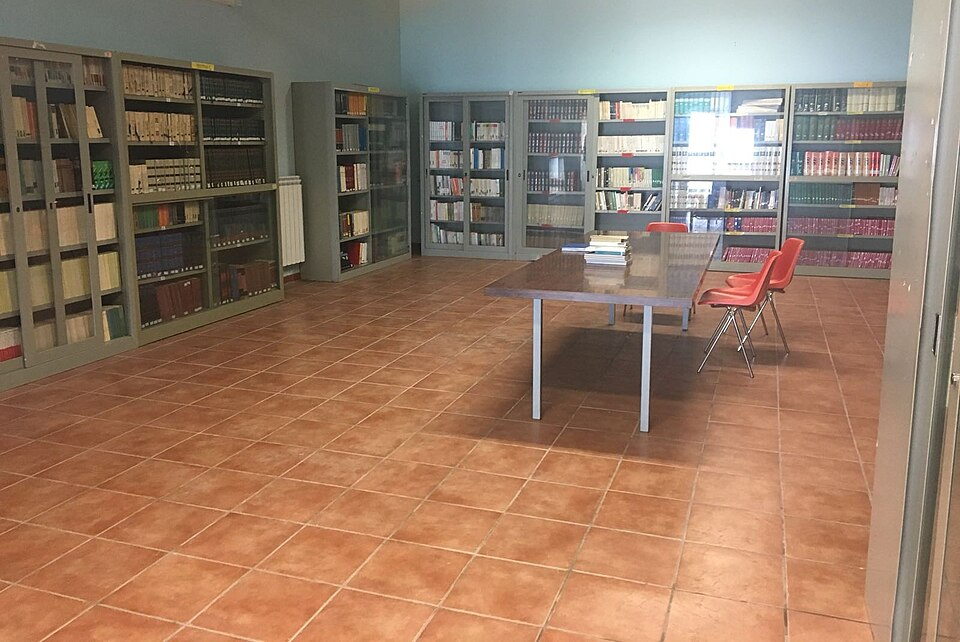

학교 도서관 열람 공간(이미지) · 사진: Timoleon75 / Wikimedia Commons, CC BY-SA 4.0
국제학교 도서관(Library)·사서 교사 활용법 — 리서치 과제는 검색창이 아니라 도서관에서 시작합니다
1. 국제학교 도서관은 "교실"입니다
학교마다 다르지만, 국제학교 도서관은 보통 세 가지 일을 합니다.
- 읽기 — 학년별 책을 갖추고, 특히 초등은 반 단위로 정기 도서관 수업이 시간표에 들어 있는 경우가 많습니다. 이 시간에 책 고르는 법과 대출·반납을 배웁니다.
- 리서치 — 중고등 과제의 출발점입니다. 주제를 좁히고, 자료를 찾고, 그 자료를 믿을 수 있는지 따지는 법을 가르칩니다.
- 온라인 자료 — 학교가 비용을 내고 구독하는 온라인 백과사전·학술 자료·신문 자료·전자책이 있습니다. 학생 계정으로만 들어갈 수 있어서, 집에서는 그 존재를 모르는 가정이 많습니다.
그리고 이 일을 맡는 사람이 사서 교사(Teacher Librarian)입니다. 많은 국제학교에서 사서는 교사 자격을 갖춘 교원으로 운영되며, 과목 선생님과 함께 리서치 단원을 설계하기도 합니다. 정확한 운영 방식은 학교마다 다르니 학기 초 안내문을 확인하세요.
2. 한국 학교 도서관과 무엇이 다른가
| 비교 | 한국 학교에서 흔한 모습 | 국제학교에서 흔한 모습 |
|---|---|---|
| 도서관의 역할 | 책 대출·자습 공간 | 리서치를 가르치는 교실 |
| 수업 연결 | 따로 가는 곳 | 초등 정기 도서관 수업, 중고등 리서치 단원에 연결 |
| 사서 | 대출 관리 중심 | 출처 찾기·평가·인용을 가르치는 교사인 경우가 많음 |
| 온라인 자료 | 개인이 검색 | 학교가 구독한 자료를 학생 계정으로 이용 |
| 과제와의 관계 | 참고하면 좋은 정도 | 출처의 질과 인용 형식이 채점 기준에 들어감 |
| 대출 기록 | 반납만 하면 끝 | 미반납·분실이 학년 말·전학 서류 처리와 묶이기도 함 |
표에서 가장 중요한 줄은 다섯째 줄입니다. 국제학교 리서치 과제에서는 무엇을 알아냈는가만큼 어디서 찾았고 왜 믿을 수 있는가가 채점됩니다. 그래서 도서관을 쓰는 아이와 안 쓰는 아이의 점수가 같은 실력이어도 갈립니다.
3. 리서치 과제에서 점수가 갈리는 세 지점
첫째, 주제를 좁히는 단계. "기후 변화"는 주제가 아니라 분야입니다. "우리 도시의 여름 폭염이 학교 일정에 준 영향"처럼 좁혀야 자료를 찾을 수 있습니다. 사서 선생님이 가장 잘 도와주는 단계가 여기입니다.
둘째, 출처를 고르는 단계. 누가 썼는지, 언제 썼는지, 어떤 근거를 댔는지, 왜 썼는지를 따지는 연습을 도서관 수업에서 시키는 학교가 많습니다. 검색창 첫 화면의 글은 이 질문에 답하기 어려운 경우가 많습니다.
셋째, 인용하는 단계. 학교가 정한 인용 형식(MLA·APA 등)에 맞춰 출처 목록을 쓰고, 본문에서 남의 생각을 가져온 곳에 표시해야 합니다. 이걸 빠뜨리면 점수가 깎이는 것을 넘어 학문적 정직성 문제가 될 수 있습니다(→ 학문적 정직성).
고학년으로 갈수록 이 세 단계가 커집니다. IB의 소논문(Extended Essay)이나 MYP의 개인 프로젝트처럼 몇 달짜리 리서치가 나오는 과정에서는, 도서관을 일찍 써 본 아이가 훨씬 덜 헤맵니다(→ IB 점수 구조).
4. 자주 하는 오해 다섯 가지
- "도서관은 책 좋아하는 아이만 가는 곳" — 리서치 과제가 있는 모든 아이가 써야 하는 곳입니다.
- "구글에서 찾으면 똑같다" — 학교가 구독한 자료는 검색창에 나오지 않는 경우가 많고, 출처가 분명해 인용이 쉽습니다.
- "사서 선생님께 물어보면 실례" — 묻는 것이 그분의 일입니다. 과제 안내문을 들고 가서 "어디서부터 찾으면 될까요"라고 물으면 됩니다.
- "출처는 마지막에 붙이면 된다" — 찾을 때 바로 적어 두지 않으면 나중에 다시 찾을 수 없습니다. 마감 전날 가장 많이 무너지는 지점입니다.
- "책은 반납만 하면 끝" — 연체·분실이 쌓이면 대출이 막히거나 학년 말 서류 처리가 늦어질 수 있습니다. 귀국·전학 전에는 꼭 확인하세요.
5. 리서치 과제를 받은 날 — 집에서 할 4단계
- 안내문에서 조건 찾기 — 출처 개수, 종류(책·학술 자료·웹), 인용 형식, 마감과 중간 점검 날짜에 표시합니다(→ 숙제·과제 관리).
- 학교 온라인 자료 들어가 보기 — 학생 계정으로 도서관 페이지에 들어가 구독 자료 목록을 한 번 열어 봅니다. 비밀번호를 모르면 그다음 날 사서 선생님께 묻게 합니다(→ 학습 플랫폼 읽는 법).
- 출처 메모 한 장 만들기 — 자료를 찾을 때마다 제목·저자·날짜·주소를 한 줄씩 적습니다. 이 한 장이 마지막 출처 목록이 됩니다.
- 한국어로 설명해 보기 — 찾은 자료가 무엇을 말하는지 아이가 부모님께 한국어로 2분 설명합니다. 설명이 안 되면 아직 이해하지 못한 것이고, 그 상태로 쓰면 베끼기가 되기 쉽습니다.
이 네 단계에서 부모님이 하시는 일은 자료를 대신 찾는 것이 아니라 조건과 날짜를 함께 보는 것입니다. 결과물은 아이가 만들어야 합니다.
6. 과외는 어디에 쓰면 좋은가
리서치 과제에서 과외가 가장 효과적인 곳은 주제를 좁히는 첫 주와 초안을 쓴 직후입니다. 첫 주에는 질문을 좁히고 어떤 자료가 필요한지 함께 정리하고, 초안 뒤에는 근거와 인용이 맞게 붙었는지 봅니다. 영어 읽기가 아직 느린 학생은 긴 영어 자료를 빠르게 훑는 법을 같이 연습하면 리서치 속도가 확 달라집니다(→ 리딩 레벨 읽는 법·국제학교 영어공부법). 저희는 학교 과제 안내문과 채점 기준을 함께 열어 보는 방식으로 수업합니다.
관련 검색어: 국제학교도서관 · 국제학교리서치과제 · 국제학교에세이과외 · 국제학교영어과외 · 출처인용방법
정리
국제학교 도서관은 리서치를 가르치는 교실이고, 사서 교사는 과제의 출발점을 함께 잡아 주는 사람입니다. 리서치 과제는 주제 좁히기 → 출처 고르기 → 인용하기에서 점수가 갈리고, 학교가 구독하는 온라인 자료는 학생 계정으로만 열립니다. 오늘 하실 일은 하나입니다. 아이와 함께 학교 도서관 페이지에 한 번 들어가 보는 것입니다. 아이의 리서치·에세이 과제가 어디서 막히는지 궁금하시면 30분 무료 수업으로 먼저 확인해 보세요. (도서관 운영·대출 규정·구독 자료는 학교마다 다르니 반드시 학교 안내를 직접 확인하세요.)